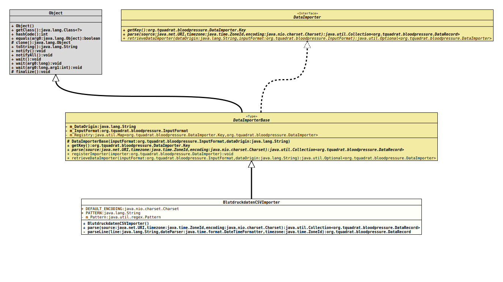

Module org.tquadrat.bloodpressure
Class BlutdruckdatenCSVImporter
java.lang.Object
org.tquadrat.bloodpressure.spi.DataImporterBase
org.tquadrat.bloodpressure.importer.BlutdruckdatenCSVImporter
- All Implemented Interfaces:
DataImporter
@ClassVersion(sourceVersion="$Id: BlutdruckdatenCSVImporter.java 120 2022-02-10 18:58:05Z tquadrat $")
@API(status=STABLE,
since="0.0.1")
public final class BlutdruckdatenCSVImporter
extends DataImporterBase
The implementation of
DataImporter
for CSV files from the site "blutdruckdaten.de"-- Author:
- Thomas Thrien (thomas.thrien@tquadrat.org)
- Version:
- $Id: BlutdruckdatenCSVImporter.java 120 2022-02-10 18:58:05Z tquadrat $
- Since:
- 0.0.1
- UML Diagram
-

UML Diagram for "org.tquadrat.bloodpressure.importer.BlutdruckdatenCSVImporter"
{kind=link}
-
Nested Class Summary
Nested classes/interfaces inherited from interface org.tquadrat.bloodpressure.DataImporter
DataImporter.Key -
Field Summary
FieldsModifier and TypeFieldDescriptionstatic final CharsetThe default encoding.private static final Patternstatic final StringThe pattern that is used to parse a data line: "\"([0-9]{2}.[0-9]{2}.[0-9]{4})\",\"([0-9]{2}:[0-9]{2})\",\"([0-9]{1,3})\",\"([0-9]{1,3})\",\"[0-9]{0,3}\",\".*\",\".*\",\".*\",\".*\",\".*\",\".*\",\"([xX]?)\",.*". -
Constructor Summary
ConstructorsConstructorDescriptionCreates a new instance ofBlutdruckdatenCSVImporter. -
Method Summary
Modifier and TypeMethodDescriptionfinal Collection<DataRecord>Parses the data on the given source location and returns a collection ofDataRecordinstance.private final DataRecordparseLine(String line, DateTimeFormatter dateParser, ZoneId timezone) Parses the given line.Methods inherited from class org.tquadrat.bloodpressure.spi.DataImporterBase
getKey, registerImporter, retrieveDataImporter
-
Field Details
-
DEFAULT_ENCODING
The default encoding. -
PATTERN
The pattern that is used to parse a data line: "\"([0-9]{2}.[0-9]{2}.[0-9]{4})\",\"([0-9]{2}:[0-9]{2})\",\"([0-9]{1,3})\",\"([0-9]{1,3})\",\"[0-9]{0,3}\",\".*\",\".*\",\".*\",\".*\",\".*\",\".*\",\"([xX]?)\",.*".- See Also:
-
m_Pattern
-
-
Constructor Details
-
BlutdruckdatenCSVImporter
public BlutdruckdatenCSVImporter()Creates a new instance ofBlutdruckdatenCSVImporter.
-
-
Method Details
-
parse
public final Collection<DataRecord> parse(URI source, ZoneId timezone, Charset encoding) throws IOException Parses the data on the given source location and returns a collection ofDataRecordinstance.- Specified by:
parsein interfaceDataImporter- Specified by:
parsein classDataImporterBase- Parameters:
source- The location for the source data.timezone- The time zone for the timestamp on the source data.encoding- The encoding of the source data.- Returns:
- The data records.
- Throws:
IOException- Something went wrong while pulling the data from the source.
-
parseLine
Parses the given line.- Parameters:
line- The line to parse.dateParser- TheDateTimeFormatterthat is used to parse the timestamp.timezone- The time zone for the timestamp on the source data.- Returns:
- The resulting data record.
-